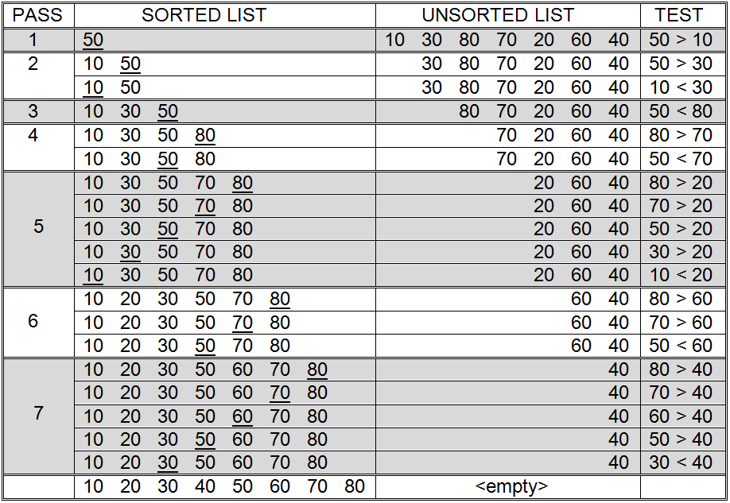
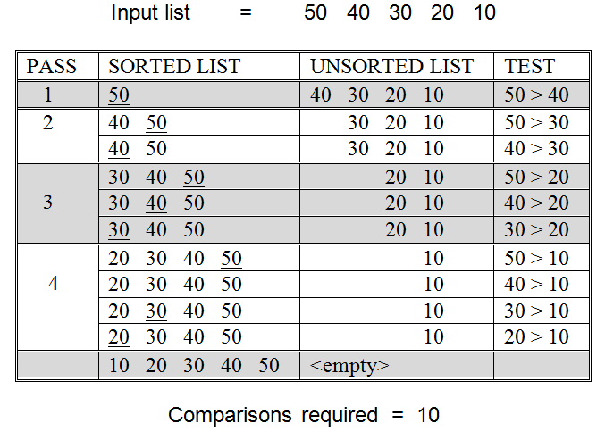
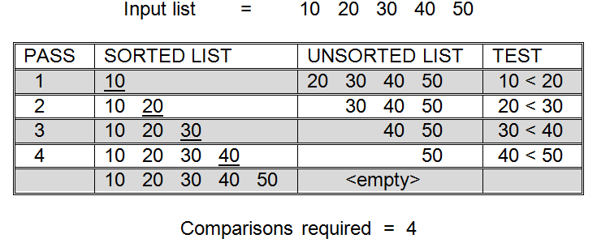
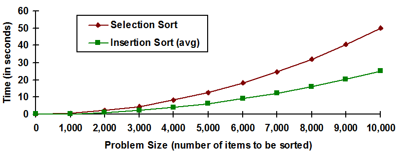

Another approach to sorting is typified by the insertion sort. Insertion sort is the procedure that most people use to arrange a hand of cards. To begin to understand the algorithm, think of an unordered input list as two separate lists. The first item of the input list is considered to be a sorted list one item long, with the rest of the input items (2 through N) forming an unsorted list. While this way of thinking about the input list may seem a bit odd at first, it really makes quite a bit of sense, since a list that is one item long certainly cannot be out of order and is thus sorted.
Insertion sort removes the first item from the unsorted list and marks it as the item to be inserted. It then works its way from the back to the front of the sorted list, at each step comparing the item to be inserted with the current item. As long as the current item is larger than the item to be inserted, the algorithm continues moving backward through the sorted list. Eventually it will either reach the beginning of the list or encounter an item that is less than or equal to the item to be inserted. When that happens the algorithm inserts the item at the current insertion point.
An example of insertion sort
The entire process of selecting the first item from the unsorted list and scanning backwards through the sorted list for the insertion point is then repeated. Eventually, the unsorted list will be empty since all of the items will have been inserted into the sorted list. When this occurs, the sort is complete.
The insertion sort procedure is illustrated on an eight item list in . Notice that this is exactly the same list that was used to illustrate the behavior of selection sort in . A careful examination of will reveal that 19 comparison operations are required to sort these values using the insertion method. This is approximately one half of the 36 comparisons needed by selection sort.
A more formal version of the insertion sort algorithm is presented in . While this version of the algorithm may appear somewhat more complex than the English version presented above, it is really just a more detailed description of the same process. Most of the action occurs in Step 3. Step 3.1 selects the first item from the unsorted list and marks it as the item to be inserted. Step 3.2 begins the scan for the insertion point at the end of the sorted list. Step 3.3 moves backwards through the list comparing the item to be inserted with the present “current item”. When either the beginning of the sorted list is reached (3.3.1) or a current item less than the item to be inserted is encountered (3.3.2), the item is inserted. Otherwise, the algorithm steps backwards to the preceding item in the sorted list (3.3.3).
Insertion sort
The number of comparisons required to sort N items using the insertion method varies depending on the original order of the items. illustrates this fact on a five item list. Part (a) of shows that 10 comparisons are required to sort the five items when they are originally arranged in reverse sorted order. Part (b) of shows that only four comparisons are required by the algorithm when the input list is already presorted. This is different from the selection sort algorithm which always requires a fixed number of comparisons to sort N items, regardless of their original order.
(a) Insertion sort of five items originally in reverse sorted order
(b) Insertion sort of five presorted items
Effect of input item order on number of insertion sort comparisons
A general formula for determining the number of comparisons required by insertion sort to order an N item list would be very useful. However, as illustrates, the number of comparisons performed by insertion sort depends, in large part, on the original order of the items to be sorted. So, no one formula, based on input size alone, can be developed to capture the required number of comparisons. Instead, three general formulas are developed below: one for the worse possible performance of the algorithm on a problem of size N, another for the best possible performance of the algorithm on a problem of size N, and a third for the average, or expected, performance of the algorithm on a problem of size N.
As was discussed during the analysis of the selection sort algorithm, the total number of comparisons required by a sort algorithm is the product of the number of “passes” through the list and the average number of comparisons performed per pass. Examining and reveals that insertion sort requires exactly N - 1 passes through the sorted list – for eight items seven passes were made, for five items four passes were made. The reason that N - 1 passes will be needed for N items is that the unsorted list starts out with N - 1 items and during each pass one item is removed from that list and placed in the sorted list. Thus, after N - 1 passes the unsorted list will be empty and the sorted list will contain all N of the original items.
Now that the number of passes through the sorted list is known, we can examine the amount of work required per pass. This is the point at which the order of the inputs has an effect on the number of comparisons needed. Let’s say the input items are presorted, as was the case in part (b) of . In this case, the last item in the sorted list will always be less than or equal to the first item in the unsorted list. Since only one comparison during each pass through the sorted list will be needed to discover the insertion point, the total number of comparisons necessary for insertion sort in this case is N - 1. Notice that this is the best possible case for insertion sort. Insertion sort performs the minimum number of comparisons when it is given a list that is presorted.
part (a) represents the worst case for insertion sort. When the items are in reverse sorted order, insertion sort will require its maximum number of comparisons. In this case, the insertion point will always be at the beginning of the sorted list, forcing the algorithm during each pass to examine and compare every item in the sorted list to the item to be inserted. The number of comparisons will be N - 1 times the average length of the sorted list. You should convince yourself, using reasoning similar to that used for selection sort, that the average length of the sorted list will be 1/2N items. Hence, the total number of comparisons required by insertion sort in the worst case is (N - 1)×1/2N = 1/2(N2 - N). This formula gives 10 comparisons for a 5 item list, as we would expect from part (a).
Derivation of a formula for the number of comparisons required by insertion sort in the average case is similar to the reasoning used for worst case. As before, N - 1 passes through the sorted list are required. The only difference between worst case and average case is the number of comparisons to be performed during each pass. When dealing with arbitrary lists, sometimes the insertion point will appear at, or near, the end of the list – requiring one, or a few, comparisons. At other times the insertion point will appear at, or near, the beginning of the sorted list – requiring a comparison between the item to be inserted and each, or most, items in the sorted list. On average, the bad cases and good cases tend to “cancel” each other out, so that we end up examining 1/2 of the sorted list. Since we established above that the average size of the sorted list is 1/2N, the average number of comparisons required per pass is 1/2(1/2)N = 1/4N. So, the total number of insertion sort comparisons is (N - 1)×1/4N = 1/4(N2 - N) in the average case.
To summarize, an insertion sort of N items always requires exactly N - 1 passes through the sorted portion of the list. What varies is the number of comparisons that must be performed per pass. The best case, which requires only one comparison per pass, occurs when attempting to sort a list that is presorted. The worst case requires an average of 1/2 N comparisons per pass and occurs when the list is presorted in reverse order. In the average case, during each pass only one half of the items in the sorted list will be examined before the insertion point is found, giving 1/4 N comparisons per pass.
These ideas are expressed succinctly by the following three equations:
Minimum number of insertion sort comparisons = N - 1
Maximum number of insertion sort comparisons = 1/2(N2 - N)
Average number of insertion sort comparisons = 1/4(N2 - N)
When comparing insertion sort to other sorts, generally the average case formula is used, since this represents the expected performance of the algorithm. Occasionally, knowledge of the worst case behavior of the algorithm is also important. Understanding this behavior is useful when attempting to determine, or limit, the maximum amount of time a computing system will take to reach an answer, even in the worst case. Such behavior is important in real time applications such as airplane flight control systems.
Before moving on to our final sort algorithm, let’s take a moment to compare the performance of insertion sort to selection sort. Selection sort always requires exactly 1/2(N2 + N) comparisons to sort N items. In the worst case, insertion sort requires 1/2(N2 - N). So, given any non-empty list, insertion sort will always perform fewer comparisons than selection sort. In the expected case, insertion sort requires 1/4(N2 - N) comparisons, and thus should require about 1/2 the comparisons needed by selection sort. This result is verified by the eight item list of and .
A comparison of the predicted runtimes of selection and insertion sort
The smaller number of comparisons needed by insertion sort means that it is generally a faster algorithm than selection sort, assuming a comparison takes the same amount of time in both algorithms (a reasonable assumption). Given a computer capable of one million high-level comparison operations per second, insertion sort will be expected to process a 10,000 item list in about 25 seconds (24.9975). Selection sort is expected to take 50.005 seconds on the same problem – or about twice as long. The result for insertion sort was computed in the following way:
contains a graphical comparison of the expected runtimes of both selection and insertion sort. The horizontal axis represents increasing problem size, and the vertical axis represents the projected runtime, in seconds. The graph indicates that while both algorithms are quadratic in nature, insertion sort runs, on average, in about half the time of selection sort when both are given lists of equal size.
As was pointed out earlier, these times are for illustrative purposes only. Our analysis focuses on comparison operations, and these algorithms do other things. The only way to get exact runtimes would be to actually code these algorithms as computer programs and run them on a real computer. However, analyses such as these are usually good enough to allow us to make meaningful comparisons. The above analysis clearly shows that insertion sort should be preferred over selection sort.
Exercises for